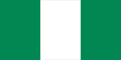

List of things tourist can enjoy
- Yankari game reserve
- Lekki conversation centre
- Idanre Hills
- Amala and ewedu
- Tuwo Shinkafa
- Fufu and Egusi
Welcome to Nigeria
Nigeria is Africa's most populous nation, with a vibrant population exceeding 242 million. Located in West Africa, the country comprises 36 states, with its federal capital in Abuja and its massive commercial hub in Lagos. It boasts an incredibly diverse cultural landscape of over 250 ethnic groups. Learn more about Nigeria.

Nigeria is located in West Africa and shares borders with Benin to the west, Chad and Cameroon to the east, and Niger to the north. The country has a diverse landscape that includes coastal areas, plains, and highlands.
It is known for its rich cultural diversity.
Nigeria offers a unique blend of traditional and modern experiences, with vibrant markets, rich history, and diverse wildlife.